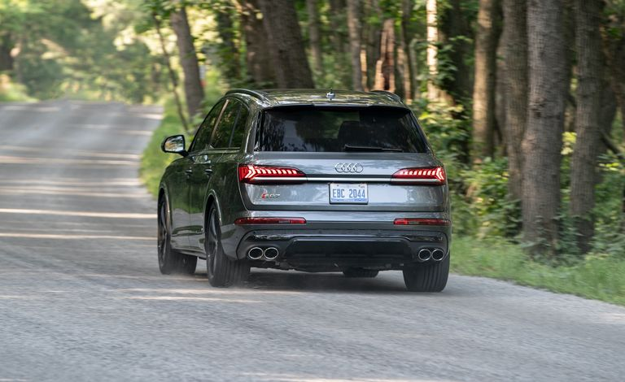

Date of manufacture:January 2023
Engine type:Gasoline
Wattage:507 hp
Eurostandard:Euro 6
Gearbox:Automatic
Category:Jeep
Mileage [km]:3589
Color:Blue
Description
-
Safety
- GPS tracking system
- Automatic stability control
- Adaptive headlights
- Anti-lock system
- Airbags - Rear
- Airbags - Front
- Airbags - Side
- El. Brake force allocation
- Electronic stabilisation programme
- Tyre pressure control
- Parktronic
- ISOFIX system
- Dynamic Resilience System
- Skid protection system
- Brake pad drying system
- Distance control system
- Descent control system
- Stop Assist System
-
Comfort
- Auto Start Stop function
- Bluetooth \ handsfree system
- DVD, TV
- Steptronic, Tiptronic
- USB, audio\video, IN\AUX pins
- Adaptive air suspension
- Keyless lighting
- Differential lock
- Boardcomputer
- Light sensor
- El. Mirrors
- El. Glasses
- El. suspension adjustment
- El. seat adjustment
- Air conditioning
- Multifunction steering wheel
- Navigation
- Steering wheel heating
- Stove
- Windshield preheating
- Seat heating
- Steering wheel adjustment
- Rain sensor
- Servo steering
- Headlight washing system
- Speed control system (autopilot)
- Stereo
- Refrigerated glove box
-
Exterior
- 4(5) Doors
- LED headlights
- Alloy wheels
- Metallic
- Panoramic sunroof
- Roof railing
- Spoilers
- Tow bar
- Shibedach
-
Other
- 4x4
- 7 seats
- Buy back
- Lease
- New imports
- Service booklet
- Tuning
-
Defense
- Alarm
- Central locking
-
Interior
- Leather salon
Overview
With seven seats, a 500-horsepower V-8 engine, and lots of features, the Audi SQ7 is a performance-luxury SUV with many virtues and few vices. It’s great to drive, balancing impressive performance with plush comfort, and looks appropriately premium and aggressive. The interior features three rows of seats and modern-looking display screens that incorporate lots of technology but have largely eliminated convenient buttons and knobs. All the best elements of the standard Q7 are here, too, only with more power and presence. The SQ7 competes with other high-performance SUVs including the BMW X5 M and Mercedes-AMG GLE-Class, and has siblings within the Audi family including the sharper-looking Audi SQ8.

What's New for 2023?
Dual-pane laminated windows are newly part of the optional Executive package, and 22-inch wheels will join the list of extras. They come with summer performance tires and are available either in matte gray or black.
Engine, Transmission, and Performance
The SQ7 has a twin-turbocharged 4.0-liter V-8 engine with 500 horsepower and 568 lb-ft of torque that it shares with the mechanically similar, two-row SQ8 SUV. That sounds like a lot, and it is: this is the same engine found in the even higher-performance RS Q8, and it only gives up a bit of power and torque in this application. Quattro all-wheel drive is standard, as is an eight-speed automatic transmission, and at our test track, the SQ7 snapped off a zero-to-60-mph time of just 3.5 seconds. Despite its performance potential, the SQ7 still effortlessly doubles as a family SUV, delivering a faultless ride. Handling is nothing short of heroic considering that it's a veritable heavyweight; it tackles curvy roads effortlessly and rarely feels unsettled.
Fuel Economy and Real-World MPG
The EPA rates the SQ7 at 17 mpg combined, 15 mpg in the city, and 21 mpg on the highway which is about as thirsty as you would expect for a V-8–powered SUV. On our 75-mph highway fuel-economy test, the SQ7 nailed its rating and delivered 21 mpg. For more information about the SQ7's fuel economy, visit the EPA's website.
Interior, Comfort, and Cargo
The SQ7 offers the same practical interior as the Q7, but with a few special touches including sportier seats with different leather trim. A third row of seats is standard equipment on the SQ7, as it is in the Q7, making it a speedy seven-passenger family hauler. Cargo space is limited behind the third row as it is in the Q7 but drop those seats and the second-row chairs and the SQ7 will likely hold the same 25 carry-on suitcases we were able to fit in the regular Q7.

Interior, Comfort, and Cargo
The Q7 received a refresh for 2020 that included a new touchscreen infotainment system, and the SQ7 shares this same setup. Three digital screens dot the dashboard, one serving as a reconfigurable gauge display, another handling navigation and entertainment, and a third providing access to vehicle settings and climate control. Depending on how you feel about physical controls versus touch-sensitive ones, the SQ7's cabin may delight or infuriate.

Infotainment and Connectivity
The Q7 received a refresh for 2020 that included a new touchscreen infotainment system, and the SQ7 shares this same setup. Three digital screens dot the dashboard, one serving as a reconfigurable gauge display, another handling navigation and entertainment, and a third providing access to vehicle settings and climate control. Depending on how you feel about physical controls versus touch-sensitive ones, the SQ7's cabin may delight or infuriate.
Safety and Driver-Assistance Features
Audi offers basic driver-assistance aids as standard on the SQ7, but more advanced tech will cost extra. For more information about the SQ7's crash-test results, visit the National Highway Traffic Safety Administration (NHTSA) and Insurance Institute for Highway Safety (IIHS) websites
Price:100.000$
| Specification | Details |
|---|---|
| Engine | 4.0-liter V8 |
| Horsepower | 500 hp |
| Torque | 568 lb-ft |
| Transmission | 8-speed automatic |
| Acceleration (0-60 mph) | 4.3 seconds |
| Top Speed | 155 mph |
| Fuel Economy | Combined: 20 mpg |
| Seating Capacity | 7 passengers |
| Cargo Space | 14.2 cubic feet behind third row |
If you want to make an inquiry or buy the car, please fill in your personal data
User reviews:
JohnDoe123
I recently purchased the Audi SQ7 2023, and I'm blown away by its performance and luxury. The twin-turbo V8 engine delivers exhilarating power, and the interior is loaded with high-tech features. It's a joy to drive every day.
CarEnthusiast47
As a long-time Audi fan, I couldn't resist getting my hands on the SQ7 2023. The combination of sportiness and practicality is unbeatable. The handling is sharp, and the cabin is spacious and comfortable. Audi has really outdone themselves with this one.
FamilyMan82
needed a family-friendly SUV with a bit of excitement, and the Audi SQ7 delivers on all fronts. It comfortably seats my family of five, and the powerful engine makes highway driving a breeze. Plus, the safety features give me peace of mind when driving with my loved ones
LuxuryLover99
I've owned several luxury SUVs in the past, but the Audi SQ7 2023 stands out for its combination of performance and refinement. The interior is beautifully crafted with premium materials, and the driving experience is nothing short of exceptional. It's the perfect blend of luxury and sportiness.
TechSavvyGirl
The Audi SQ7 2023 is not only stylish but also packed with advanced technology. The virtual cockpit and infotainment system are intuitive and user-friendly, and the driver-assistance features make every journey safer and more enjoyable. It's like driving a high-tech masterpiece on wheels.